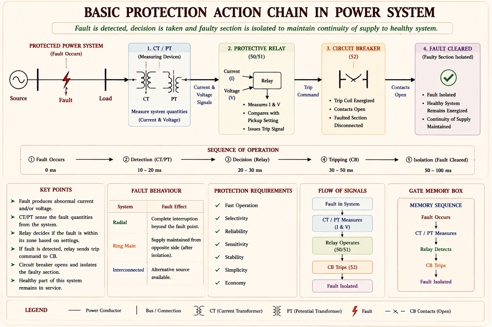
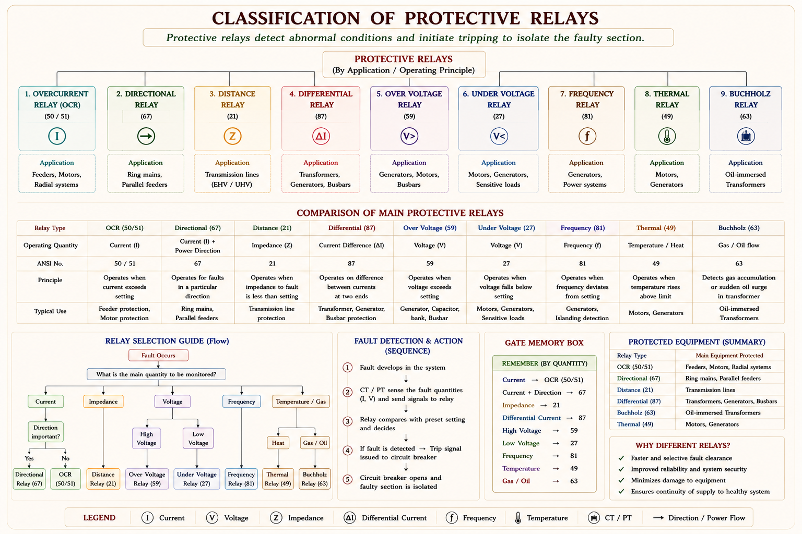
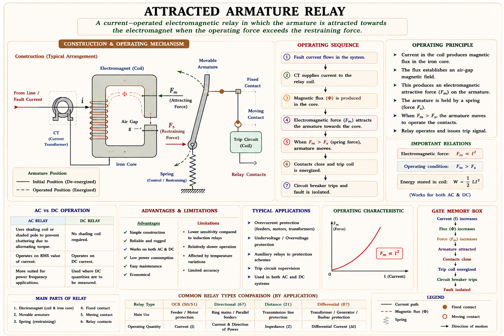
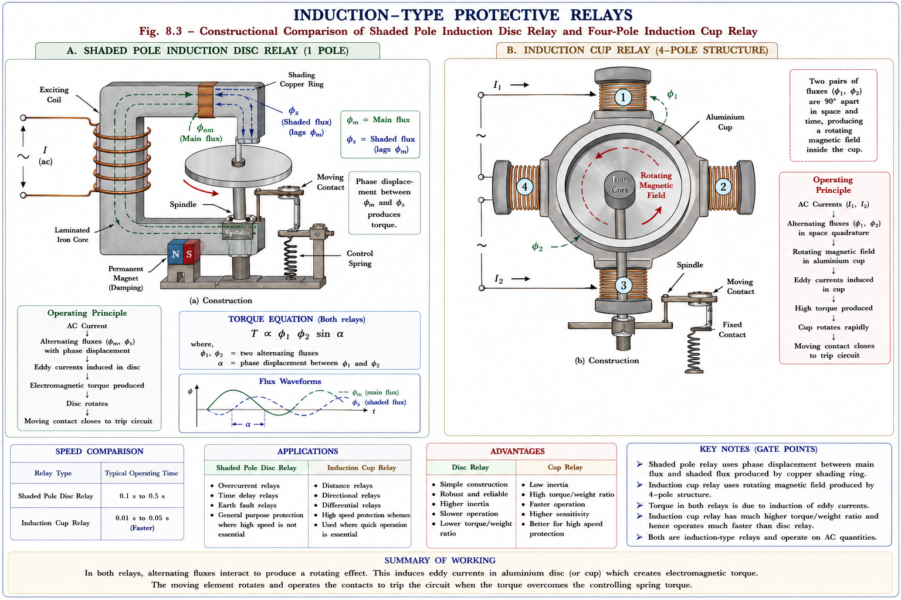
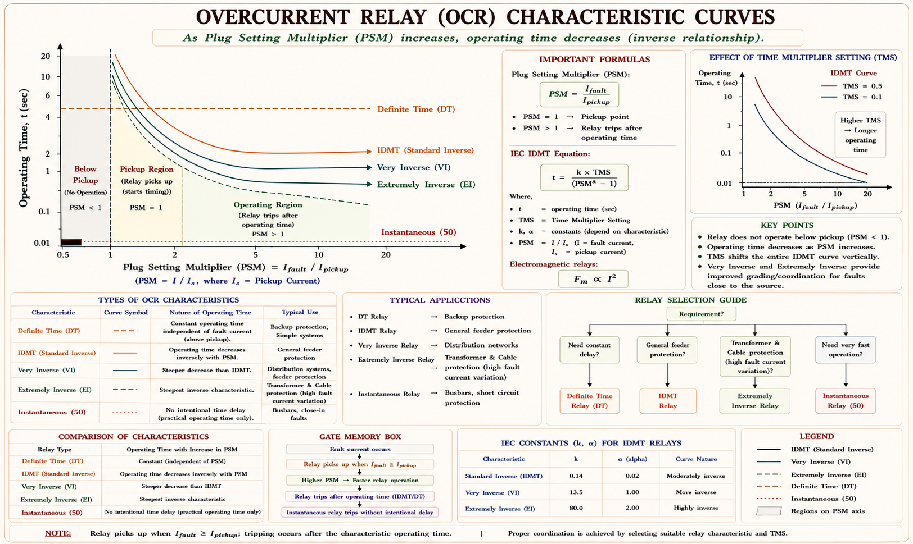
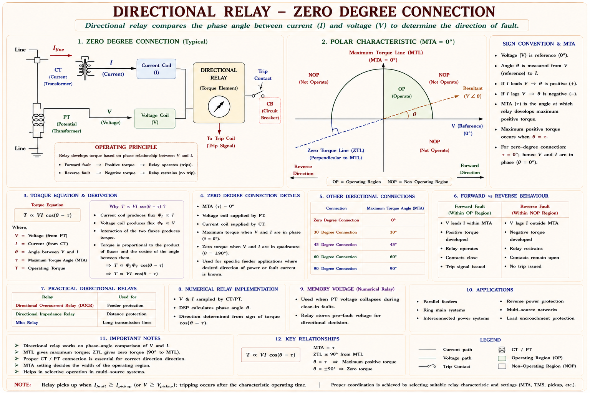
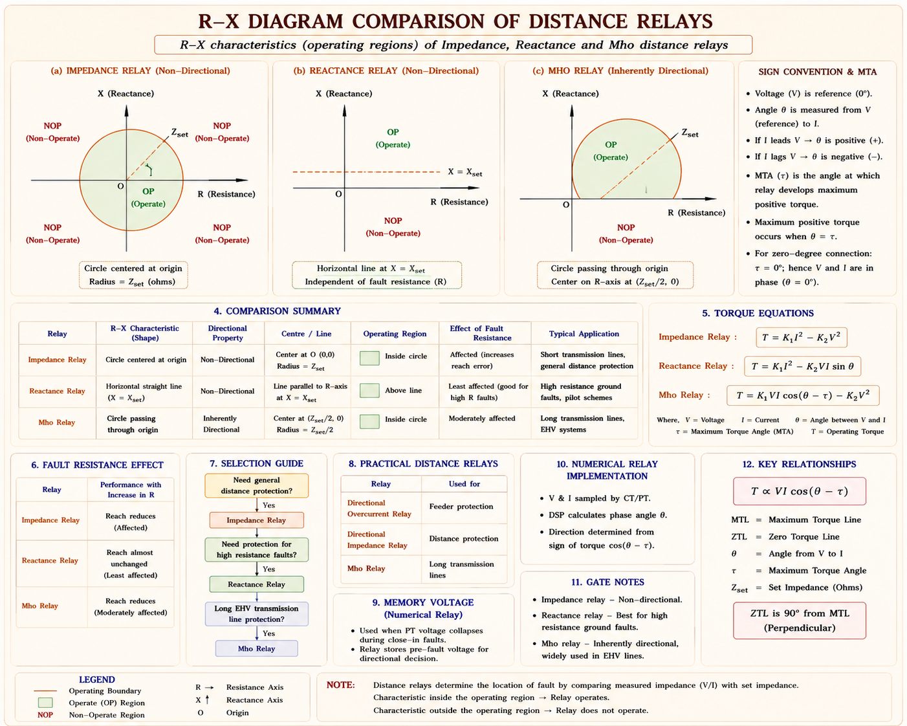
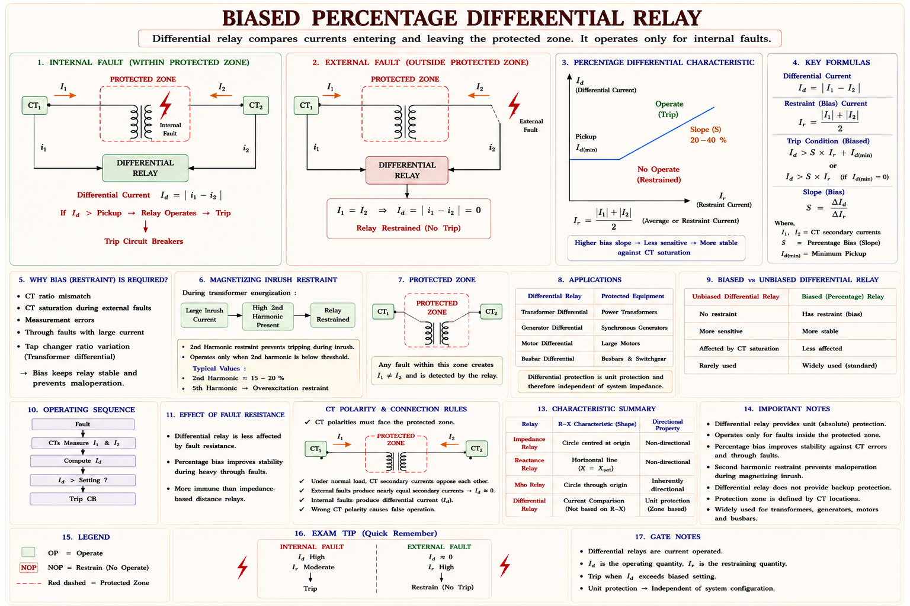

Complete concept-first study of relay fundamentals, classification, operating principles, over-current relays, distance relays, and differential relays — with GATE & IES previous year questions, SVG diagrams, and worked examples.
A power system carries enormous energy. Any fault — if not cleared within milliseconds — can cascade into widespread outage, equipment destruction, and even fire. Protective relays are the nervous system that senses abnormal conditions and triggers circuit breakers before damage spreads.

| Term | Definition | Engineering Significance |
|---|---|---|
| Pick-up Level | Minimum actuating quantity that causes relay to operate | Sets the fault-detection threshold — must be above max load |
| Reset Level | Value below which relay returns to its normal position | Ratio of reset-to-pickup ≈ 0.95–0.99 for good relay |
| Operating Time | Time from pickup-level crossing to contact closure | Shorter → better; determines fault clearance speed |
| Reset Time | Time from de-energisation to return of contact to normal | Must be short to restore system quickly after fault clearance |
| Stability | Ability to remain inoperative for external faults & loads | Prevents unwanted tripping — heavy load current must not trip relay |
| Primary Relay | Connected directly in the protected circuit | Used for low-voltage, directly accessible equipment |
| Secondary Relay | Connected via CTs and PTs to high-voltage circuits | Standard for all high-voltage systems (11 kV and above) |
| Back-up Relay | Operates with delay if primary protection fails | Second line of defence — may be at adjacent breaker |
| Auxiliary Relay | Operates in response to main relay opening/closing | Used for lockout, alarm, flag — can be instantaneous or time-delayed |
Students often confuse "primary protection" with "primary relay." Primary protection is the first-level scheme (e.g., differential protection for a transformer). A primary relay is one connected directly (without CT/PT). These are entirely different concepts — expect a MCQ on this distinction.
The goal of protection is not to prevent faults — faults are inevitable in any large power system. The goal is to minimise damage and outage time by rapidly isolating the faulty section while keeping the rest of the system intact.
Speed · Sensitivity · Selectivity · Reliability (Dependability + Security) · Economics + Simplicity + Stability. In GATE questions, all seven objectives may be listed and you are asked which one is NOT an objective — memorise all seven.
| Type | Operating Principle | Key Feature | Era |
|---|---|---|---|
| Electromechanical | Mechanical force on armature or disc | Moving parts; attracted-armature or induction disc | Pre-1960s |
| Static Relay | Analog electronics (op-amp, comparator) | No moving parts; coils/magnets replaced by transistors | 1960s–1980s |
| Digital Relay | Microprocessors replacing analog circuits | Numerical processing; programmable settings | 1980s–2000s |
| Numerical Relay | DSP + dedicated software tools | Multiple protection functions in one device; SCADA integration | 2000s–present |

Electromechanical relays generate a mechanical torque proportional to electrical quantities. When operating torque exceeds restraining torque, the moving element closes the trip contact.
Think of this as a simple electromagnet pulling a hinged iron arm. When current through the coil is large enough, the magnetic force on the armature overcomes the spring restraint and closes the trip contact.

Operating torque is proportional to I² (square of rms current). This is why even a small increase in fault current dramatically increases the operating force — the relay reacts very strongly to large faults. The spring torque K is constant, so the relay has a definite pickup threshold.
Induction relays work on the same principle as an induction motor: two phase-displaced fluxes produce a rotating field that exerts torque on an aluminum rotor (disc or cup). Because both fluxes must exist, induction relays are AC only.

Induction relays work on AC only — they need two phase-displaced fluxes to create a rotating field. Attracted armature relays work on both AC and DC. This distinction appears in IES objective questions almost every year.
Used to protect rotating machines from overheating due to sustained overload. The operating element directly senses temperature rise, not current directly.
| Type | Sensing Element | Application |
|---|---|---|
| Thermocouple / Thermistor | Junction of two dissimilar metals — generates EMF proportional to temperature | Motor winding protection; embedded in stator slots |
| RTD (Resistance Temp. Detector) | Platinum wire resistance increases with temperature | Large generators, transformers — very accurate |
| Bimetallic Strip | Two metals with different expansion rates bend on heating | Simple motor starters, small appliances — mechanical actuation |
The most widely used relay in distribution systems. It operates when the current through it exceeds a pre-set threshold (pickup). Derived from the Universal Torque Equation with \(K_1 > 0,\; K_2 = 0,\; K_3 = 0,\; K < 0\).
PSM tells you "how many times the fault current is the relay's pickup current." PSM = 1 means the relay is exactly at pickup. PSM = 10 means 10× pickup — the relay will operate very quickly. The characteristic curve maps PSM → operating time.
TMS is adjusted by changing the position of the backstop (the starting angle of the disc). A TMS = 0.5 means the relay operates in half the time read from the standard 100% TMS curve.

| Type | Operating Time | Characteristic | Use Case |
|---|---|---|---|
| Instantaneous OCR | ≈ 0.1 sec (no intentional delay) | Operates immediately above pickup | Close-in faults; first stage of OCR coordination |
| Definite Time OCR | Fixed, independent of PSM | Horizontal line on t-PSM graph | Where coordination step-time must be fixed |
| IDMT OCR | Inversely proportional near pickup; approximately constant at high PSM | Standard inverse curve | Most common — distribution feeder protection |
| Very Inverse | Core saturates later → inverse over wider PSM range | Steeper inverse curve | Feeders where fault current varies widely |
| Extremely Inverse | I²t ≈ K (very steep) | Almost I²t = constant | Coordination with fuses; cable protection |
For fault currents just above pickup, operating time is approximately inversely proportional to fault current (inverse region). For very high fault currents, the electromagnet core saturates and the time becomes nearly constant — this is the "definite minimum time" region. The transition happens because core saturation limits further flux increase even as current grows.
In ring mains and parallel feeders, fault current can flow in either direction. A simple OCR cannot discriminate direction. A directional relay adds a voltage (polarising) coil so the relay can detect the power direction and only trip for faults in the specified direction.

When a fault occurs very close to the relay location, the voltage at the relay terminals drops to near zero. If V ≈ 0, the directional torque \(T = K_3 VI\cos(\theta-\tau) \approx 0\) — the relay cannot operate even though fault current is flowing. This region is called the Dead Zone. Solution: voltage coil must NOT be connected to the same phase as the current coil (cross-polarisation).
Distance relays measure the impedance (V/I) between the relay and the fault. Since impedance of a transmission line is proportional to its length, impedance measurement is equivalent to distance measurement — hence the name.
For a uniform transmission line: \(Z_{fault} = V_{relay}/I_{fault} = z \cdot d\) where z = impedance per km and d = distance to fault in km. So measuring V/I is equivalent to measuring the distance to the fault. If Zseen < Zset, the fault is within the protected zone → relay trips.

| Feature | Impedance | Reactance | Mho |
|---|---|---|---|
| Also called | Voltage-restrained OCR | Directional-restrained OCR / Reactive-power-restrained OCR | Voltage-restrained directional relay |
| Operating torque | Current unit (I²) | Current unit (I²) | Directional unit (VI cosθ) |
| Restraining torque | Voltage unit (V²) | Directional unit (VI sinθ) | Voltage unit (V²) |
| Inherent direction | No | No | Yes |
| Arc resistance effect | Moderate | Not affected | Highly affected |
| Power swing effect | Moderate | High | Less |
| Load encroachment | Moderate | High | Less |
| RX diagram space | Moderate (circle at origin) | Most (horizontal band) | Least (circle through origin) |
| Best for | Medium transmission lines | Short lines (high arc R) | Long lines (power swings) |
At threshold \(T=0\): \(K_1I^2 = K_2V^2\)
Relay operates when: \(Z_{seen} < Z_{set}\)
At threshold \(T=0\): \(K_1I^2 = K_3VI\sin\theta\)
Maximum torque angle = 90°
At threshold \(T=0\):
Circle passes through origin on R-X diagram
Short line: Arc resistance comparable to line impedance → use Reactance relay (not affected by arc R). Medium line: Arc R moderate, power swings appreciable → use Impedance relay. Long line: Power swings are severe, arc R effect small → use Mho relay (least affected by power swings; inherently directional).
The most selective relay known — it operates only for internal faults in the protected zone, making it a unit protection scheme. External faults (no matter how large) do not cause operation.
Under normal conditions and for external faults: current in = current out (KCL holds for the protected zone). So the difference \(i_1 - i_2 = 0\) and the relay operating coil (ROC) carries zero current. For an internal fault, some current escapes to the fault point: \(i_1 \neq i_2\), and \(I_{ROC} = i_1 - i_2 = I_{fault}\) — the relay trips.

| Cause of Mal-operation | Effect | Preventive Measure |
|---|---|---|
| CT mislocation from equipotential points | IROC ≠ 0 under normal conditions | Place balancing resistors on pilot wire; ROC at exact mid-point |
| CT characteristic mismatch (BH curves) | Ratio error → differential current even at no fault | Both CTs must have identical magnetisation characteristics |
| CT ratio and phase angle errors | Differential current under through-fault | Biased/percentage-slope differential relay — restraint proportional to through-current |
| Transformer magnetising inrush | Large asymmetric current at switching — relay may trip | Harmonic restraint (2nd harmonic is signature of inrush, not fault) |
The slope (nr/n0) sets how much CT mismatch the relay tolerates. A 20% slope means: the differential current must be more than 20% of the average current before tripping. Too low slope → mal-operation on external faults. Too high slope → insensitive to genuine internal faults. Typical transformer protection: 15–30% slope.
Step 1: Find the current setting in Amperes:
Step 2: Find the secondary fault current from CT:
Step 3: Calculate PSM:
PSM = 10 means the fault current is 10 times the relay's pickup current. From the IDMT characteristic curve at PSM = 10, the operating time at TMS = 1 is typically about 1.5–2 sec (read from standard curve).
Step 1: Find operating current (pickup):
Step 2: Find PSM:
Step 3: From the IDMT curve at PSM = 8, TMS = 1.0 → operating time ≈ 3 sec
Step 4: Apply TMS scaling:
Actual impedance to fault: \(Z_{actual} = 50 \;\Omega\)
CT ratio: \(n_{CT} = 400/5 = 80\)
VT ratio: \(n_{VT} = 10{,}000/1000 = 10\)
The impedance seen by the relay is NOT the actual line impedance. It is scaled by (CT ratio / VT ratio). The relay must be set to \(Z_{set} \geq Z_{seen,max}\) to cover the full protected zone.
Full load current:
Reactance per phase: \(X_{ph} = \frac{12.5\%}{\sqrt{3} \times 219} \times 6600 \approx 2.19 \;\Omega\)
Reactance of 10% winding: \(X_{10\%} = 0.1 \times 2.19 = 0.219 \;\Omega\)
Phase voltage of 10% winding: \(V_{10\%} = \frac{6600}{\sqrt{3} \times 10} = 381 \text{ V}\)
At fault current = 200 A:
Explanation: During a fault, the voltage drops and current increases — the ratio V/I (impedance seen) decreases. When Zseen < Zset, the fault is within the relay's protection zone and it operates. This is the fundamental operating condition of all distance relays.
Explanation: Differential relay is a unit protection scheme — it responds exclusively to internal faults within its protected zone. External faults (regardless of magnitude) cannot cause operation. This gives it the highest selectivity of all relay types. Distance relay has good selectivity but is not perfectly selective (zone reach uncertainty). OCR has the least selectivity.
An IDMT relay with TMS = 0.5 and current setting 125% is connected to a circuit through a 400/5 CT. The fault current is 2000 A. From the characteristic, at PSM = 5, standard time = 5 sec. Find actual operating time.
Explanation: The Mho relay characteristic on the R-X diagram is a circle that passes through the origin. This is because the threshold condition \(Z_{set} = \frac{K_3}{K_2}\cos(\theta - \tau)\) traces a circle centred at \(\frac{Z_{set}}{2}\angle\tau\) and passing through the origin. Since it passes through the origin, faults at the relay location (Z=0) are just at the relay boundary — giving it inherent directional properties.
Explanation: Induction relays operate on the principle of a rotating magnetic field produced by two phase-displaced AC fluxes. In DC circuits, there is only one flux — no phase displacement possible — so the rotating field and hence the torque cannot be produced. Attracted-armature type relays work on both AC and DC.
Explanation: For short transmission lines, the arc resistance at the fault point is comparable in magnitude to the line impedance. Impedance relay and Mho relay are significantly affected by arc resistance (which adds a resistive component, shifting the apparent impedance off the expected locus). Reactance relay measures only the reactive component X = V sinθ / I and is therefore unaffected by arc resistance — making it the best choice for short lines.
Ask any question about Protective Relays — derivations, numericals, GATE concepts, or relay comparisons.
Relay senses abnormal quantities → issues trip to CB → isolates fault. Objectives: Speed, Sensitivity, Selectivity, Reliability (Dependability + Security), Stability, Simplicity, Economics.
Attracted armature: \(T_{op} \propto I^2\) — works AC & DC. Induction disc/cup: needs two phase-displaced fluxes — AC only. Cup: fastest (0.01 s), ratio reset/pickup ≈ 0.99.
PSM = Secondary fault current / CS(A). TMS scales actual time. IDMT: inverse near pickup, definite at saturation. Extremely inverse: I²t = K (coordinates with fuses).
\(T = K_3 VI\cos(\theta-\tau) - K\). MTA line ⊥ zero torque line. Dead zone at near fault. Cross-polarise voltage to avoid dead zone. Used in ring mains & parallel feeders.
Impedance: circle at origin, no direction. Reactance: horizontal line, best for short lines (arc R immune). Mho: circle through origin, inherently directional, best for long lines.
Highest selectivity — unit protection. \(I_{ROC} = i_1 - i_2\). Biased: slope = nr/n0. Applications: transformer, alternator stator, busbar. Harmonic restraint for inrush.
Protection of Transformers, Alternators, and Transmission Lines — Buchholz relay, restricted earth fault protection, negative sequence protection, carrier current protection, pilot wire protection, and digital protection schemes with full GATE & IES coverage.
All technical content is derived from the following standard textbooks. All explanations, derivations, SVG diagrams, and examples are original to Aarova AI.